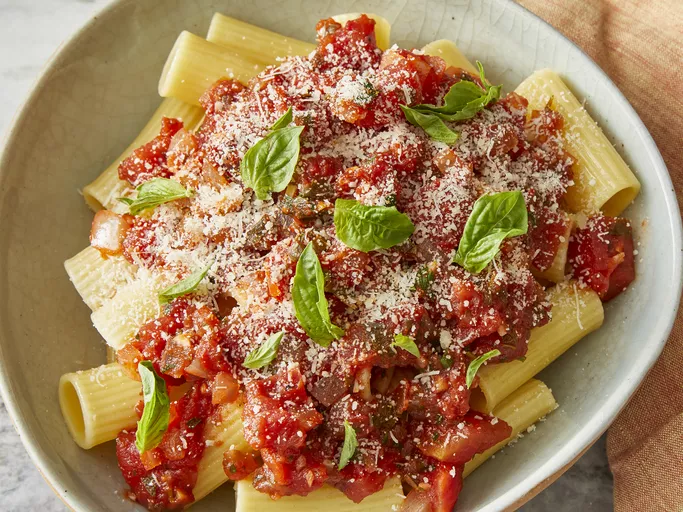

Homepage
Arrabbiata Sauce

Description
Arrabbiata sauce is spicy and delicious. Ideal on penne pasta.
Ingredients
- 1 teasponn olive oil
- 1 cup chopped onion
- 4 cloves garlic, minced
- 2 cans peeled and diced tomatoes
- 3/8 cup red wine
- 2 tablespoons tomato paste
- 1 tablespoon white sugar
- 1 tablespoon chopped fresh basil
- 1 tablespoon lemon juice
- 1 teaspoon crushed red pepper flakes
- 1/2 teaspoon Italian seasoning
- 1/4 teaspoon ground black pepper
- 2 tablespoonschopped fresh parsley
Steps
- Heat oil in a large skillet or saucepan over medium heat. Add onion and garlic; cook and stir until softened, about 5 minutes.
- Stir in diced tomatoes, wine, tomato paste, sugar, basil, lemon juice, red pepper flakes, Italian seasoning, and black pepper; bring to a boil. Reduce heat to medium and simmer, uncovered, for about 15 minutes.
- Stir in parsley. Ladle sauce over hot cooked pasta of your choice.
- Serve hot and enjoy!